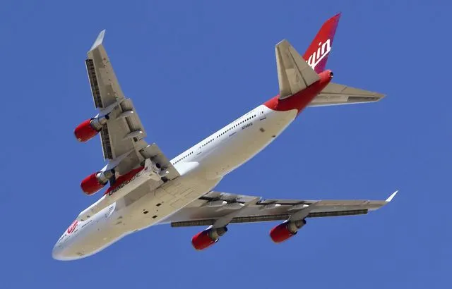

Virgin Orbit a désormais le droit de lancer des satellites avec son avion depuis le Royaume-Uni

Virgin Orbit a obtenu l’autorisation d’effectuer des vols spatiaux depuis le sol britannique. Une première. L’Autorité de l’aviation civile (CAA) a donné son feu vert pour l’envoi de satellites à partir d’un avion. En janvier 2023, Virgin Orbit a ainsi prévu de lancer neuf nanosatellites en employant une fusée LauncherOne fixée à l’aile d’un Boeing 747, rapporte Engadget.
Ce système permet de réduire la taille de la fusée, d’utiliser moins de carburant et de se passer d’une rampe de lancement verticale. L’avion baptisé « Cosmic Girl » va partir de l’Aéroport de Newquay, dans les Cornouailles, au sud de l’Angleterre. Il va voler à une altitude de 35.000 pieds, soit un peu plus de 10 km, avant de lancer la fusée qui aura la charge de mettre les satellites en orbite.
22/12/22 à 16h02